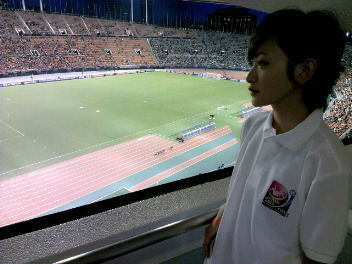

| 2012/09 10 Mon | リフレッシュしたよ！ |
今日はゆっくりしました！
珍しくお洋服買いに行ったんだよ！
しかも原宿。
いこまちゃんだってね、おしゃれになってきたんだよ！
と言うことで、
乃木坂４６の東京公演
『１６人のプリンシパル』が昨日千秋楽を迎え、無事終わりました！
振り返ってみると、いこまちゃん異常な行動したな〜
みなさんにはご迷惑をおかけしました。
ちゃんと反省しました。
沢山の事を学びました。
一つ一つ自分のものにして今後に生かして行きたいです。
そして今回は'順位'というものがありました。
私は、最初の頃そればっかりに捕らわれていました。
アリスにならなきゃいけないんだ!!
そればっかり。
でもそれは違うんだな。
私は一つの考えを持つと、他の意見を聞けない性格なんです。
そんな自分と真剣に向き合える時間がありました。
人は、全て器用に出来る生き物じゃない。
出来ないものがあるのは当然。
努力で出来るものもある。でも出来ないものもあるかもしれない。
ただ、出来ない自分や他人を否定してはいけない。
そうしたら、広がる可能性を閉ざしてしまうから。
一人ひとり、自分に一番合う場面がある。
才能を全力で出せる場所が。
その場所がくるまで、努力すればよいのだ!!
誰かは絶対自分を見てくれている。
全てで輝かなくていい。
輝ける場所は、必ずやってくる。
その時まで、努力をしろ。必ず自分の力になるから。貴方には笑顔でいてほしい。
大丈夫だよ！
リラックス
この期間は脳ミソ使った！
シワ濃くなった！
ここらで一言。
あー!!
しんどかった！
楽しかった！
嬉しかった！
せいやっ!!
ふー!!
自分で言うのもなんだけど成長できたと思います。
乃木坂４６メンバーの絆も深まったし

今回、私は沢山の方々に迷惑をかけました。
メンバーのみんな
スタッフのみなさん
家族のみんな
ファンの皆さま!!
支えてくれてありがとうございました！
感謝でいっぱいです。
沢山救われて、教えてもらって、生駒はしあわせものです。
みんながいたから、わたしは元気に毎日ステージに立つ事が出来ました！
これからも迷惑かけると思いますが、よろしくお願いします！
ではね!!

へばなっ!!
コメント(400)
2012/09/10 21:12